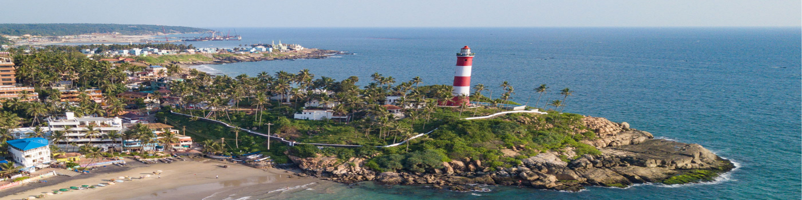

Rich culture of Kerala
This picture shows some of the art forms of Kerala.

Kerala Cuisine
Kerala offers many delicacies which are savoured by many tourists.

Kovalam Beach
One of the major tourist attraction in the Thiruvananthapuram district.
Jadayupara
Jadayupara is a major tourist destination located in Kollam district.
Houseboats at Alappuzha
Kerala has got many backwaters through which houseboats ply.
Kochi - Chinese Fishing Net
Kochi is a major area of trade and commerce endowed with a lot of natural beauty.
Wayanad
This is a picture from Muthanga wildlife sanctuary.
Bekal Fort
It is the biggest fort in Kerala built by Shivappa Nayaka of Keladi in 1650 AD located in Kasargod district.
Horn Bill at Nelliyampathy, Palakkad
This is the state bird of Kerala.
Thekkady, Idukki
This is a town near Periyar National Park and a major tourist attraction.